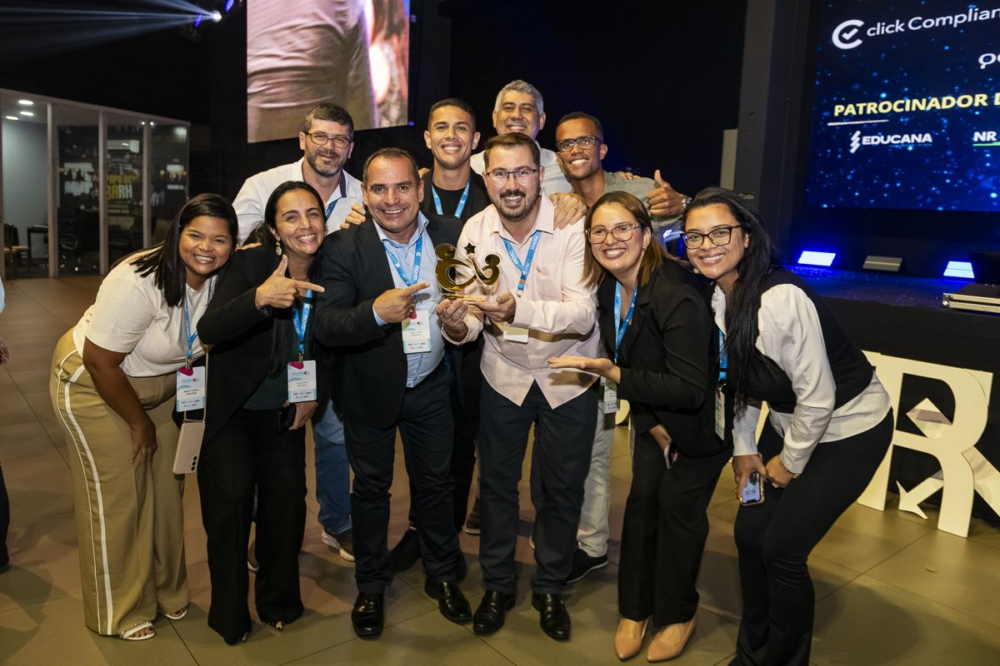
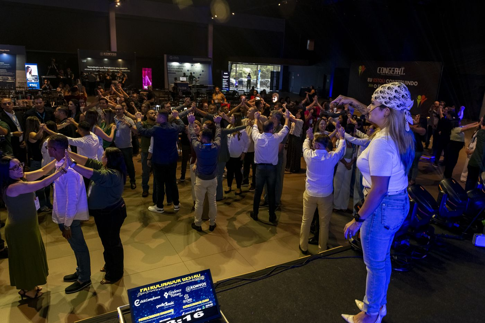
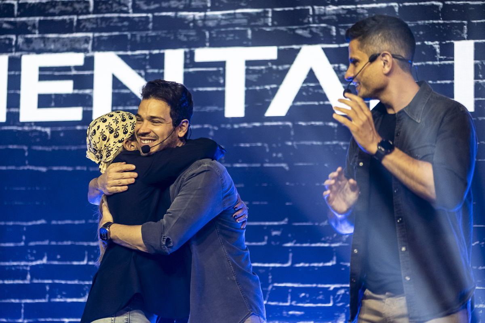
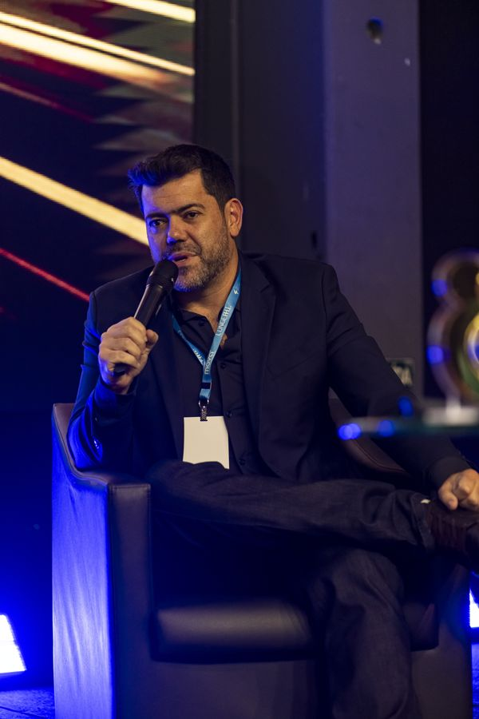
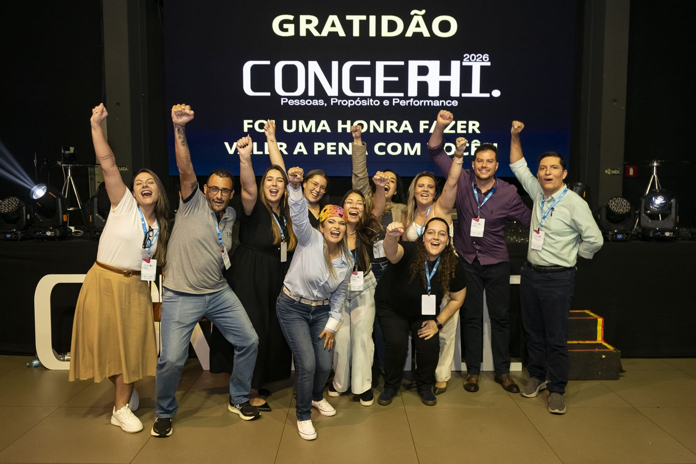
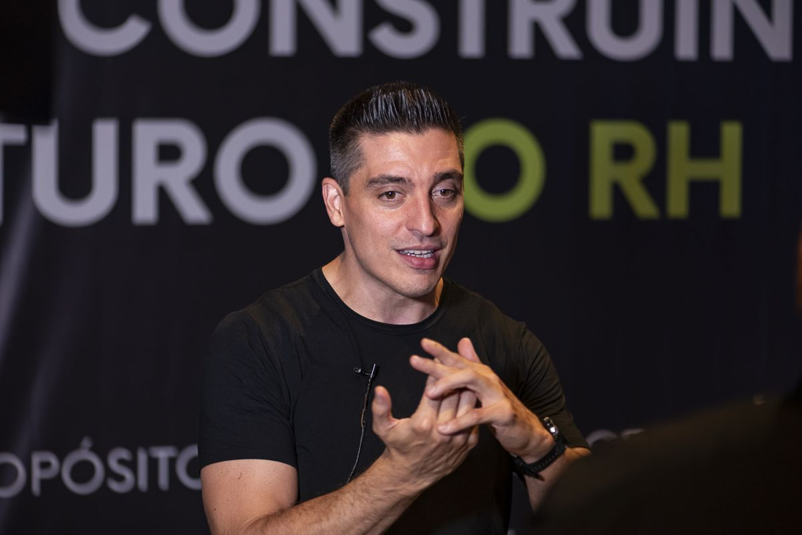

Dia 1 · Manhã
ATO I
Cenário
Economia, tecnologia e mercado de trabalho: o contexto em que RH e liderança atuam hoje. Uma visão ampla, com um especialista em análise de cenário, para mostrar em que palco estamos pisando.
Por trás de todo cargo, todo título e toda liderança existe uma pessoa. São dois dias em Bauru para tirar a máscara, olhar para quem sustenta a sua empresa e voltar com um plano de verdade.
Faltam para a cortina abrir
A Inteligência Artificial está reconfigurando as competências do mercado. A nova NR-1 colocou os riscos psicossociais no centro da gestão de pessoas. E, no meio disso tudo, quem cuida de todo mundo raramente tem tempo de cuidar de si.
Você precisa ter resposta para tudo, mesmo quando a pergunta ainda nem existe.
Você precisa parecer bem para a equipe, mesmo nos dias em que não está.
A NR-1 transformou saúde mental e segurança psicológica em exigência legal, e não só em discurso.
A IA chegou ao RH e você quer usá-la para liberar tempo para gente, e não para substituir gente.
Você quer voltar para a empresa com ferramentas práticas, e não só com inspiração que acaba na segunda-feira.

No RH e na liderança, às vezes são várias ao mesmo tempo: a de quem tem resposta pra tudo, a de quem está bem mesmo quando não está, a de quem precisa parecer forte pela equipe inteira, mesmo sendo, antes de tudo, gente.
Nem toda máscara é um problema. Algumas protegem, outras cuidam. O risco está em perder de vista qual delas estamos vestindo e deixar que a máscara vire a nossa cara.
Por trás de todo cargo existe uma pessoa. E é ela que sustenta empresas de verdade.
1.200 profissionais em Bauru, dois dias de palco, Prêmio Ser Gente, podcast ao vivo e muita emoção. Dá uma olhada no que aconteceu na 11ª edição.





Profissionais de RH e líderes de empresas como Schmersal, TOTVS, CIEE, Roca Group, Grupo Alonso e LRG Construtora contam o que levaram do CONGERHI.
Você se prepara nos bastidores, com uma trilha digital de 12 meses, e vive a virada no palco: dois dias presenciais em Bauru. Assim, o congresso não termina quando as luzes apagam.
A partir de janeiro de 2027 · 12 meses de acesso
Conteúdo técnico e prático em cinco pilares, com nomes renomados da gestão de pessoas. É uma ferramenta para usar no dia a dia de RH e liderança, e não um bônus esquecido depois da inscrição.
19 e 20 de março de 2027 · Bauru/SP
Inspiração, provocação e conexão ao vivo. É o momento em que tudo o que foi estudado nos bastidores vira experiência real, compartilhada com centenas de profissionais de RH e líderes do interior.
Um roteiro pensado como uma peça: do cenário em que você atua até a essência que você leva de volta para a empresa.
Economia, tecnologia e mercado de trabalho: o contexto em que RH e liderança atuam hoje. Uma visão ampla, com um especialista em análise de cenário, para mostrar em que palco estamos pisando.
Mediador, estrategista, cuidador. Os vários chapéus que RH e liderança vestem nesse cenário, e como reconhecer essa multiplicidade sem se perder nela.
O que a gente veste para dar conta, e o que isso custa. Saúde mental, segurança psicológica, NR-1, risco e peso. Uma manhã inteira para o momento mais denso e confrontador.
O que sobra quando a máscara cai. Propósito e cultura genuína para levar de volta à empresa, porque ninguém é autêntico o tempo todo, e nem todo papel é falso.
Conteúdo em linguagem de negócio, para RH e liderança, disponível por 12 meses a partir de janeiro de 2027.
O planejamento por trás de toda decisão: estratégia que vira processo, indicador e direção clara para o time.
O treino de olhar para dentro antes de agir para fora. A base de toda decisão e de todo exemplo.
A tecnologia que ilumina decisões e libera tempo para a conexão humana.
A imagem que se veste e se sustenta todos os dias: ser, na prática, o que a marca promete.
A hora de entrar em cena: o preparo vira resultado, com feedback e indicadores.
CEO da Gente Mais · Especialista em desenvolvimento humano
Tati é a voz que conduz os quatro atos do CONGERHI 2027 e costura cada palestra, cada painel e cada provocação em uma única experiência.
À frente da Gente Mais, ela dedica a carreira ao desenvolvimento de pessoas e lideranças. No palco, fala sobre o que a gente aprende nos bastidores: comportamento humano, conexão e relações que fazem a gestão acontecer de verdade.
Bora fazer valer a pena.
Estamos fechando o elenco dos quatro atos. Os nomes serão revelados um a um, e quem está na lista fica sabendo antes de todo mundo.
🔔 Quer saber primeiro quem sobe ao palco em 2027?
Entrar na listaAnalistas, business partners, coordenadores e gestores que querem dominar NR-1, IA, cultura e indicadores, com ferramentas para usar já na semana seguinte.
Quem conduz times e quer liderar com mais clareza, menos peso e mais verdade. Cada pilar da trilha fala diretamente com a liderança.
Donos e diretores de médias e grandes empresas do interior que entendem que a cultura é o que sustenta o resultado.
O momento mais emocionante do CONGERHI. Em 2026, foram mais de 20 finalistas. Reconhecemos os protagonistas das melhores práticas humanas e inovadoras do Estado de São Paulo, porque mobilizar-se em prol das pessoas é contribuir para um mundo melhor.
Quem contribui com a classe por meio de palestras, artigos e compartilhamento de conhecimento, e é lembrado pelo legado que deixa aos colegas.
Práticas que atendem de forma inovadora às necessidades dos colaboradores e contribuem para atrair, desenvolver ou reter talentos.
Projetos sociais de empresas privadas que contribuem para o desenvolvimento humano e para a independência dos cidadãos.
Indicação sem nenhum custo, com inscrições abertas até janeiro.
Os finalistas se comprometem a adquirir 10 passaportes presenciais.
O reconhecimento acontece no palco do congresso presencial, em Bauru.
Os valores e lotes serão divulgados em breve. Quem entra na lista agora recebe o 1º lote em primeira mão, com o menor preço do ano.
Os bastidores completos para estudar no seu ritmo, de onde estiver.
Para quem quer viver o CONGERHI da primeira fila.
Os dois dias de palco em Bauru, com tudo o que acontece ao vivo.
📈 Para ter uma ideia: em 2026, o passaporte começou em R$ 397 no 1º lote e terminou em R$ 697 no último. Quem entra cedo paga menos.
Quando RH e liderança vivem a mesma experiência, a mudança volta junto para a empresa. Temos pacotes empresariais com condições especiais para levar o seu time.
Falar com a equipeCotas de patrocínio e estandes para marcas que querem estar perto do RH e das lideranças das médias e grandes empresas do interior paulista. Os espaços de exposição são limitados.
Solicitar mídia kitRua Luís Levorato, 1-55 · Rod. Mal. Rondon, km 335 · Jardim Marabá · Bauru/SP
Nos dias 19 e 20 de março de 2027, das 9h às 19h, no Alameda Rodoserv Center, em Bauru/SP.
São conteúdos gravados em cinco pilares (Roteiro, Ensaio, Iluminação, Figurino e Performance), disponíveis a partir de janeiro de 2027 por 12 meses, com certificação reconhecida pelo MEC.
O Passaporte dá acesso aos dois dias de congresso, aos quatro atos, ao networking e ao Prêmio Ser Gente. O VIP inclui tudo isso, além de mesa próxima ao palco, acesso aos palestrantes do presencial e o livro “O Segredo do Copo Cheio”, de Tati Souza, autografado.
Em breve. Entre na lista para receber o 1º lote em primeira mão, antes da abertura geral.
O elenco de 2027 está sendo confirmado e será revelado nas próximas semanas. Já está confirmada a Tati Souza, CEO da Gente Mais, como apresentadora e host. Em 2026, passaram pelo palco nomes como Eugenio Mussak e Pedro Cortella.
Sim. O certificado geral, reconhecido pelo MEC, é emitido depois que você consome os conteúdos das trilhas digitais e participa do presencial.
Sim. Temos pacotes empresariais com valores especiais. Fale com a equipe pelo WhatsApp (14) 99665-8272.
Temos cotas de patrocínio e espaços de exposição. A proposta comercial é sob consulta: clique em “Solicitar mídia kit” na seção de patrocínio.
Entre na lista e receba antes de todo mundo o 1º lote, com o menor valor do ano, e a revelação dos palestrantes.